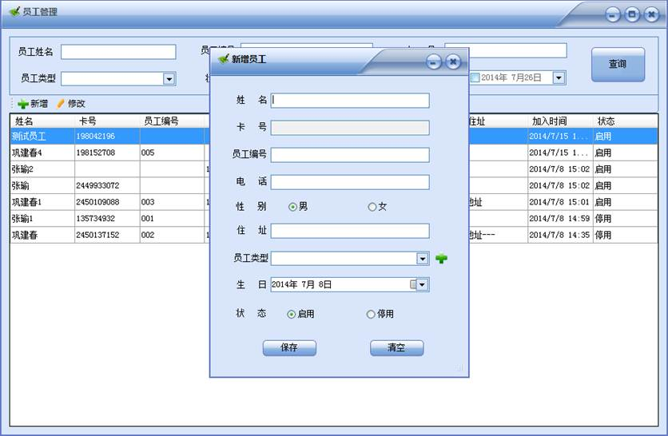
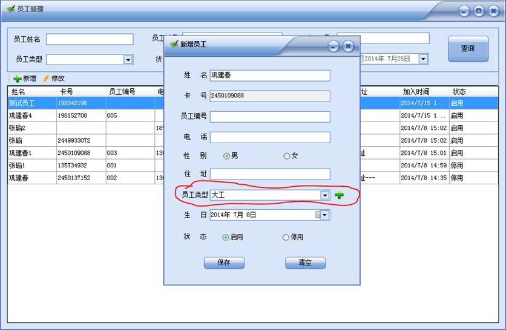

打开顶部菜单【员工管理】——>【基本信息管理】界面如下图所示：

此管理界面，上部是查询功能，可以根据员工的姓名、编号、卡号、员工的类型、状态和入职时间等不同条件进行查询，中部功能按钮【新增】、【修改】可以新增员工，可以对已经存在的员工信息进行修改，点击【新增】界面如下图所示：

在弹出的录入界面输入员工的姓名（姓名不可以重复，如果员工重名，请在名字后面一次编号，以便系统区分），在这个窗口打开状态下，连接好读卡器，并刷卡，卡号会自动读取，并填入卡号输入框中，卡号输入框，为了保证卡号输入的完整无误，不允许手工输入卡号，必须通过刷卡器读入，员工类型就是给这个员工分配的职位，如果职位不存在，可以通过后面的“+”号按钮进行增加，点击“+”会弹出如下窗口

也分为上下两部分，上面是新增和编辑框，下面是当前系统所有的员工类型类别，这些都可以通过中部的【新增】、【编辑】、【删除】按钮来实现增、删、改的功能，输入新类型，点击保存，新增的员工类型会自动出现在员工类型选择框中，如下图所示：

然后点击【保存】这个新员工就增加成功，并出现在员工管理列表中。另外，如果只需要新增员工，也可以通过主界面上的【新增员工】进行快捷操作。